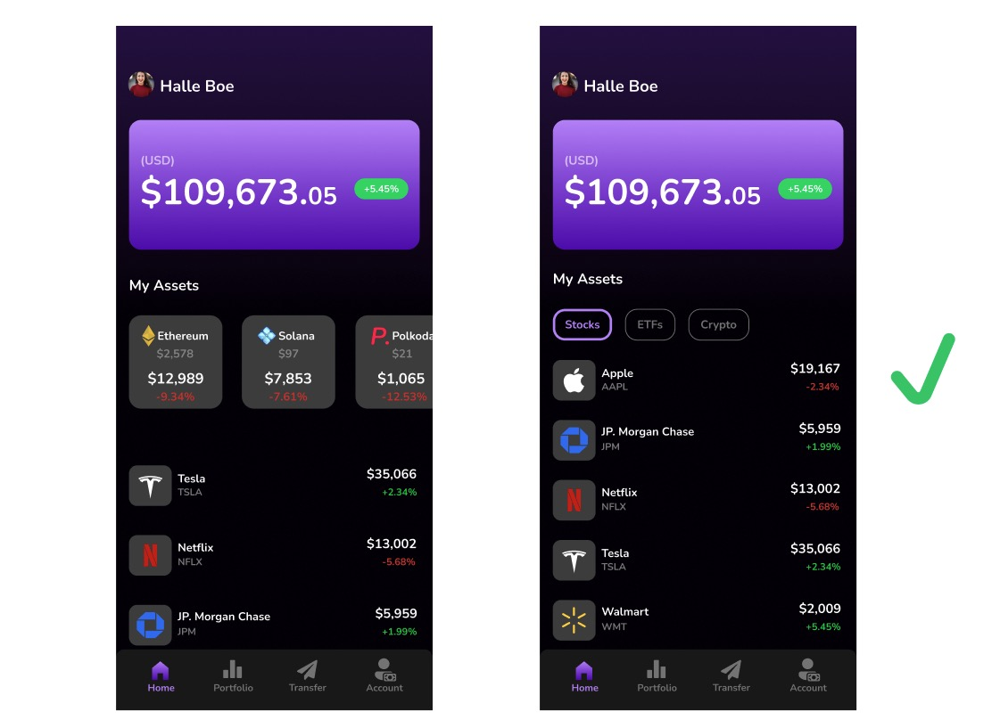

MOV.

My Role
UI/UX Designer
Visual Designer
Interaction Designer
Duration
6 months
Tools
Figma
InVision
Adobe Illustrator
Team: I collaborated with a UX Researcher, a Product Manager and a Software Engineer on this project.
The Problem
Many investors today have multiple investment accounts with different financial institutions, which can be difficult to manage and keep track of. They have to log in to different platforms, remember multiple login credentials, and navigate through different interfaces to check their portfolio performance and balances. Although there are valid reasons to why that is, such as compliance issues, it is still a major frustration for the average investor.
The Solution
We decided to come up with a platform would allow investors to link all of their accounts, and view them in a single, unified interface. The platform would simplify the process of managing multiple investment accounts, and give users a holistic view of their portfolio.
Design Process

Competition Analysis
To understand the competitive landscape and to identify best practices for the investment platform, a competition analysis was done. The analysis showed that several existing platforms in the market offered a limited ability to link accounts from different financial institutions, and were not able to offer a unified view of the user's portfolio.
Persona
We used a proto-personal to help us focus on the users and avoid letting our desires trump user needs.

Ideation
Considering the importance of the dashboard screen, I proposed two low-fidelity dashboard designs to the stakeholders, detailing the pros and cons of each version.
1. As a user, I want to be able to see my portfolio balance as soon as I open the app.
2. As a user, I want to be able to view and quickly access my invesment assets.

Low Fidelity Flow of Onboarding.
1. As a user, I want to be able to link all of my invesment accounts when signing up.
2. As a user, I want to be able to understand the tools and features of the app.

Style Guide

Log In User Flow

Search User Flow

Usability Testing
After conducting an AB test, we found that the screen on the right had a faster & higher success rate in locating assets.
High Fidelity Mockups


Handoff / Documentation

I have annotated the design files, describing every aspect of the design to ensure clarity.